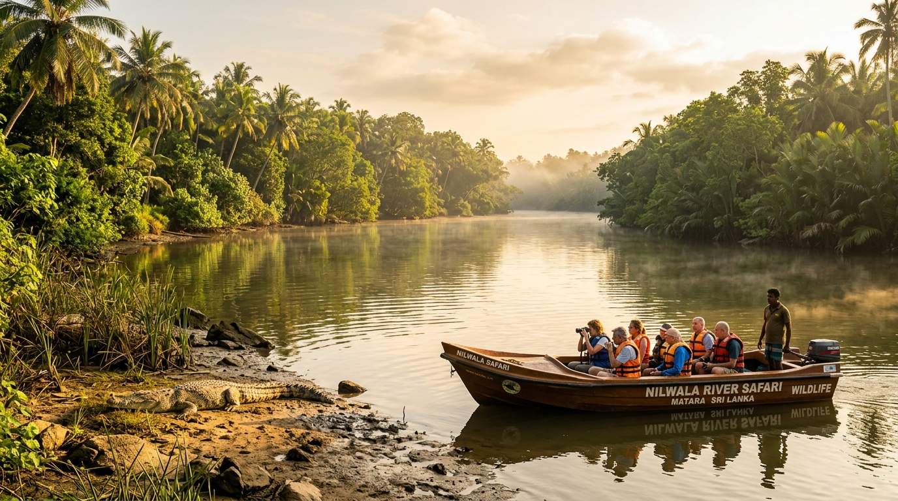
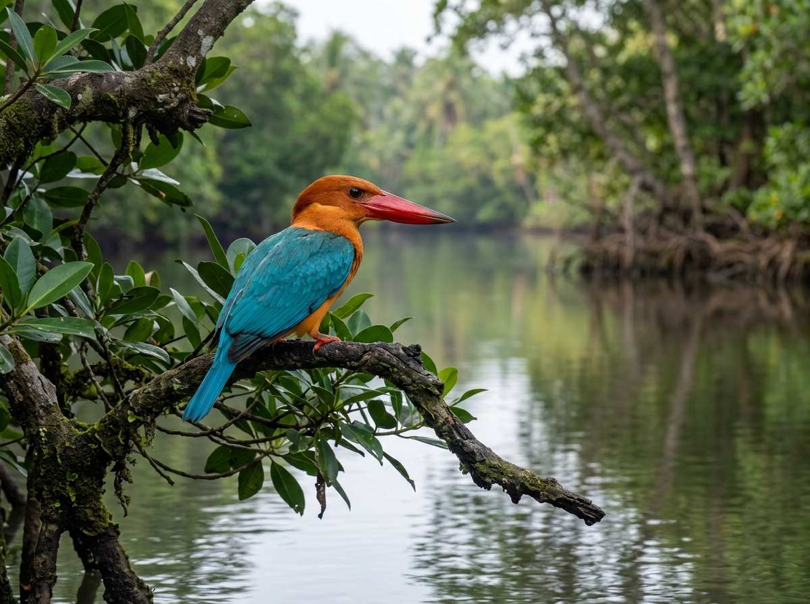
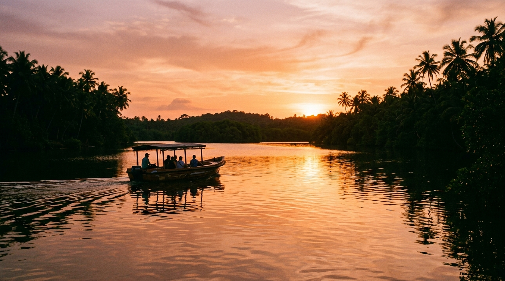
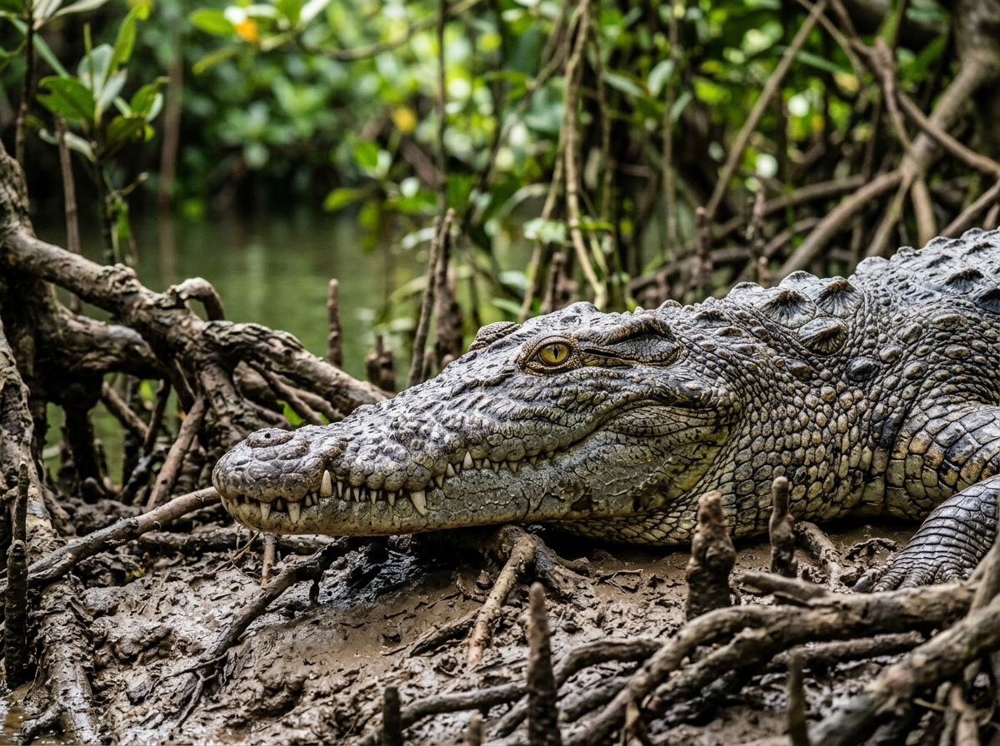
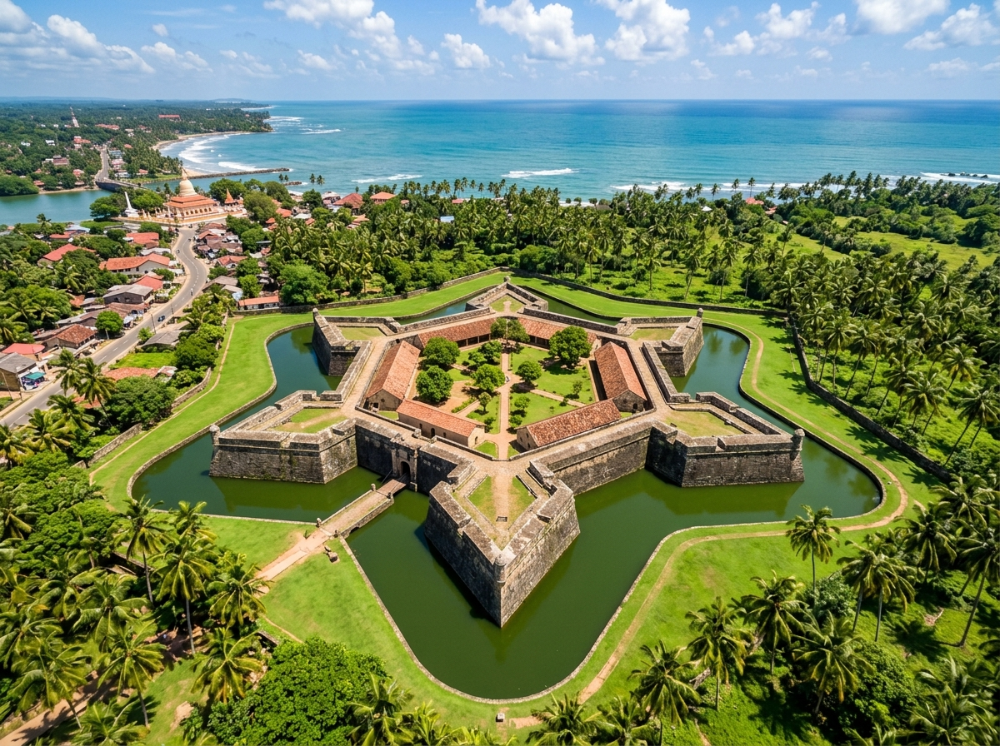

Embark on an authentic wildlife boat adventure in Matara, Sri Lanka. Spot giant saltwater crocodiles, exotic kingfishers, and river monitor lizards in their pristine mangrove habitat with certified local guide Bashitha.
Natural river ecosystem, zero cages or baiting
Certified equipment for adults and children
Years of expert local river navigation experience
Consistently top-rated Southern Sri Lanka tour
We believe in intimate wildlife storytelling, absolute passenger safety, and preserving the delicate mangrove ecology of Southern Sri Lanka.
We operate nimble, stable safari boats designed for small groups and private parties. No crowded tourist barges—enjoy unobstructed 360° river views and quiet cruising.
Complimentary high-clarity binoculars provided on every boat. Spot camouflaged reptiles, nesting waterbirds, and playful monkeys high in the mangrove canopy.
Every safari includes a complimentary platter of fresh seasonal Sri Lankan tropical fruits (pineapple, passionfruit, watermelon) and chilled bottled water.
Guide Bashitha maneuvers the boat specifically to catch optimum natural lighting angles, steady positioning, and optimal telephoto zoom distances.
Zero animal chasing or disturbance. We respect wild animals in their natural territory, ensuring sustainable conservation for future generations.
Located just 15 minutes from Mirissa, 25 minutes from Weligama, and right off the Colombo Southern Expressway (E01) Matara interchange.
All packages include certified boat safari, licensed guide Bashitha, USCG life jackets, binoculars, and fresh tropical fruit refreshments.
Our flagship river wildlife expedition. Search for massive basking saltwater crocodiles and explore the lush mangrove tributaries.

Early Morning 2.5 HoursDepart at first light when the river awakens. Perfect for avid birdwatchers seeking kingfishers, sea eagles, egrets, and river monitors.

Scenic Twilight 2 HoursGlide under golden twilight skies as the tropical heat fades. Watch evening crocodile movements and roosting flying foxes.
The Nilwala River is a vital coastal estuarine habitat supporting top apex predators and hundreds of migratory bird species.

Apex PredatorThe world's largest living reptile. In the Nilwala River, specimens frequently reach 4 to 5.5+ meters in length. They are master ambush predators with exceptional salt-gland adaptation.
Sri Lanka's largest kingfisher species, sporting bright turquoise wings, a warm ochre breast, and a massive coral-red bill designed for spearing river fish and crabs.
Test your observational skills, explore reptile anatomy, and track wildlife sightings on your digital passport.
Click the camouflaged crocodile hiding in the scene before time runs out!
Tiny, highly sensitive dome receptors lining the crocodile’s upper and lower jaws detect minute pressure ripples and vibrations in murky river water, allowing them to pinpoint prey even in total darkness.
Tick off the species you spot during your river boat tour with guide Bashitha!
Beyond the Nilwala River, Matara is rich with 18th-century Dutch fortifications, sacred ocean island temples, and tranquil turtle lagoons.

HistoryA unique 6-point star-shaped stone fortification built by the Dutch East India Company (VOC) following the Matara Rebellion of 1761.
Sheltered by an offshore natural coral reef barrier, creating a calm swimming lagoon renowned for resident wild green sea turtles.
A tranquil Buddhist temple perched on a rocky island surrounded by crashing Indian Ocean waves, reached via an iconic suspension bridge.
Make the most of your Southern Sri Lanka adventure with these expertly paced day itineraries.
Perfect for morning or afternoon travelers based in Mirissa or Galle.
Explore the mangrove waterways with Bashitha, spot wild crocodiles, and enjoy fresh tropical fruit refreshments.
Walk through the VOC 6-pointed star fortress and explore the colonial archaeology museum.
Taste traditional Matara fish ambul thiyal (clay-pot sour fish curry) and fresh buffalo curd with kithul treacle.
The ultimate combination of river crocodiles, history, and ocean sea turtles.
Morning boat safari when reptiles are actively basking under the tropical sunshine.
Cross the ocean bridge to the island temple and enjoy freshly caught ocean fish by the coast.
Swim with wild green sea turtles in the calm lagoon before a breathtaking Indian Ocean sunset.
Real wildlife sightings captured on our boat trips with guests from around the globe.
Tag @crocodile_watching_matara on your photos to be featured on our official channel!
Read real feedback from travelers who joined guide Bashitha on the Nilwala River.
"Highlight of our 2 weeks in Sri Lanka! Bashitha is an exceptional guide who knows the river like the back of his hand. We saw 4 huge crocodiles up close and the fresh fruit platter on board was delicious!"
"As a wildlife photographer, this tour exceeded all expectations. Bashitha kept the boat rock steady and positioned us perfectly for great lighting on kingfishers and crocodiles. 100% recommended!"
"Super safe and exciting for our family with two young kids (ages 7 & 10). The life vests were well fitted and Bashitha was patient, informative, and made it an unforgettable adventure for the kids."
Insightful guides, packing advice, and local travel tips to help you plan your southern trip.
Everything you need to know about species, departure timings, safety protocols, and what to expect on the boat.
Read Full Article →From the Dutch Star Fort to swimming with green sea turtles at Polhena, discover Matara's hidden gems.
Read Full Article →Compare the calm turtle reef lagoon of Polhena with the trendy surfing breaks and sunset cafes of Madiha.
Read Full Article →Our non-negotiable guidelines ensure that every trip is both safe for you and respectful to wildlife.
All passengers receive certified USCG-standard buoyancy life vests. Kids vests are specifically adjusted for secure fit.
We do not bait, provoke, or feed wild crocodiles. Wild behavior is protected and animals are observed purely naturally.
Guide Bashitha maintains a calibrated observation buffer that allows breathtaking photos without causing stress to river reptiles.
Send your preferred date and time directly to guide Bashitha on WhatsApp for instant confirmation.
Bashitha & River Crew
Nilwala River Boat Launch, Matara, Sri Lanka